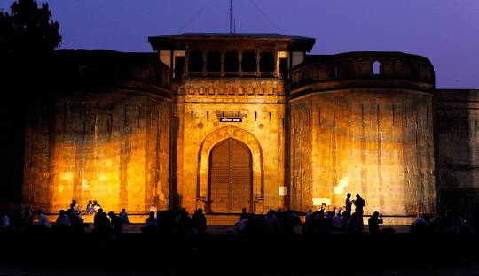
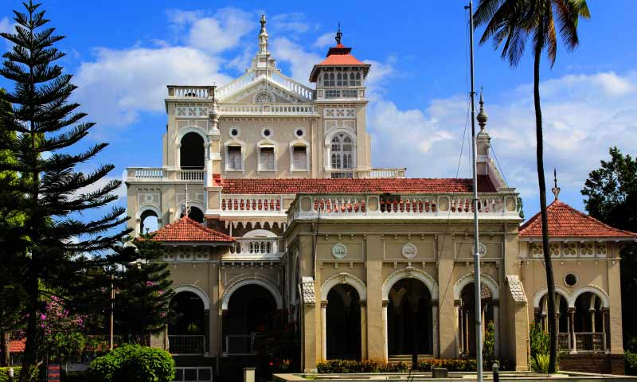
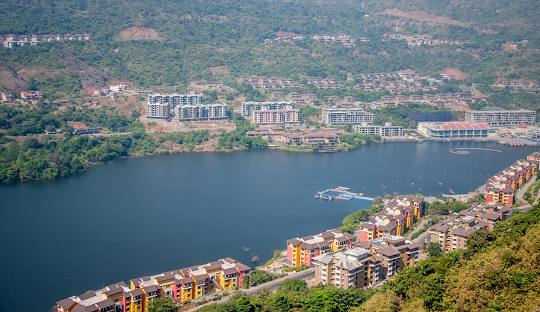
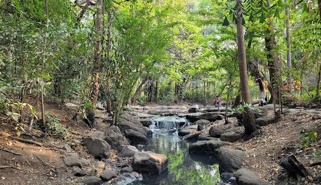
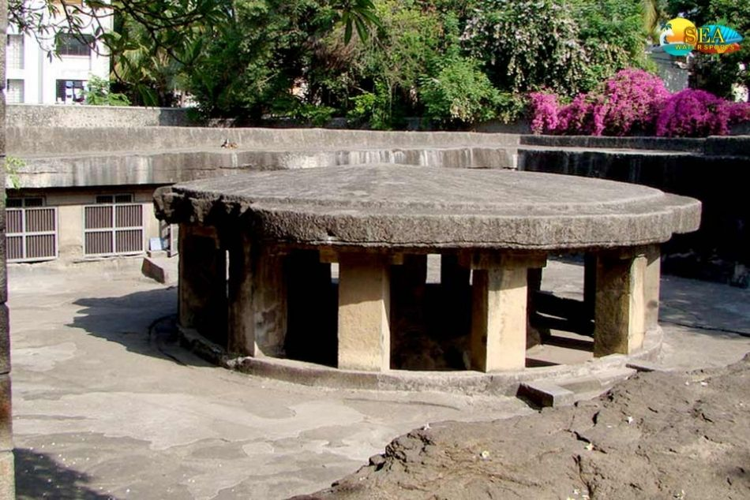
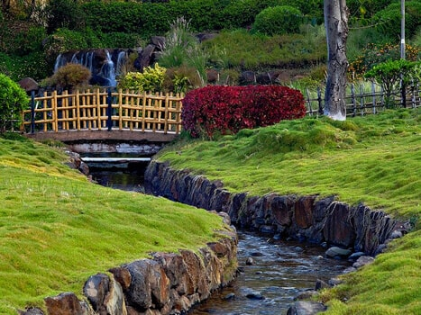
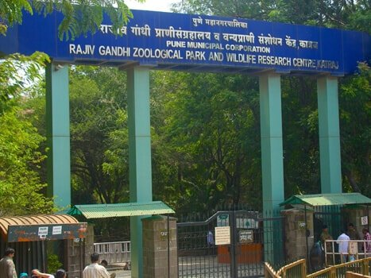
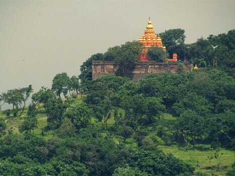

Shaniwar Wada
A historical fort in Pune, known for its grandeur.
View on Map

Aga Khan Palace
A magnificent palace with a rich history.
View on Map

Lavasa City
Stylistically based on the Italian town and mind blowing art.
View on Map

Lal Mahal
A historical fort in Pune, known for its grandeur.
View on Map

Osho Garden
A magnificent palace with pacefull nature
View on Map

Swaminarayan Temple
It is a significant spiritual and cultural landmark.
View on Map

Pataleshwar Cave Temple
An architectural marvel steeped in history and spirituality.
View on Map

Pu.La.Deshpande Garden
Pu.La.Deshpande Garden is a beautiful Japanese-style garden
View on Map

Rajiv Gandhi Zoological Park
Prominent zoo cum snake park in Pune.Spread over 130 acres.
View on Map

Parvati Hill
Prominent hill lock with a good number of historical vestiges.
View on Map